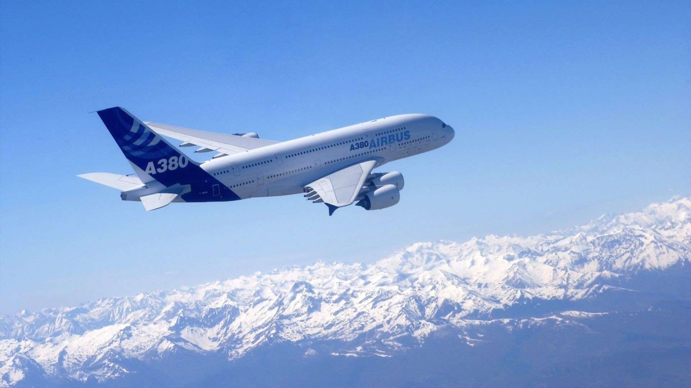

Ambition
Pilot
Since I was a kid i was facinated by the work and life style of a pilot. Though the studies and the requirements to become a pilot are very tough to attain, it all never matters in front of my passion to become a pilot. Its just an unimaginable feeling to fly above the sky and travel to a new place everyday. You get to visit the most exotic places around the world. Here are few of the pilot liscences and the order in which you get them.
Student Pilot License (SPL)
Private Pilot License (PPL)
Commertial Pilot License (CPL)
Inspiration
Everyone gets inspired by some ome or something to do a perticular thing. In my case my inspiration is to become a pilot is famous youtuber and a commertial airline pilot Mr.Gaurav Taneja. If intrested in aviation and want to gather information about the field, do go check out his youtube channel.